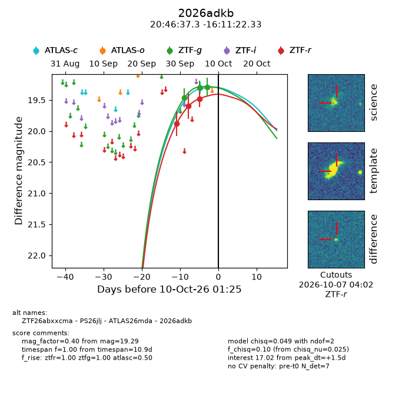
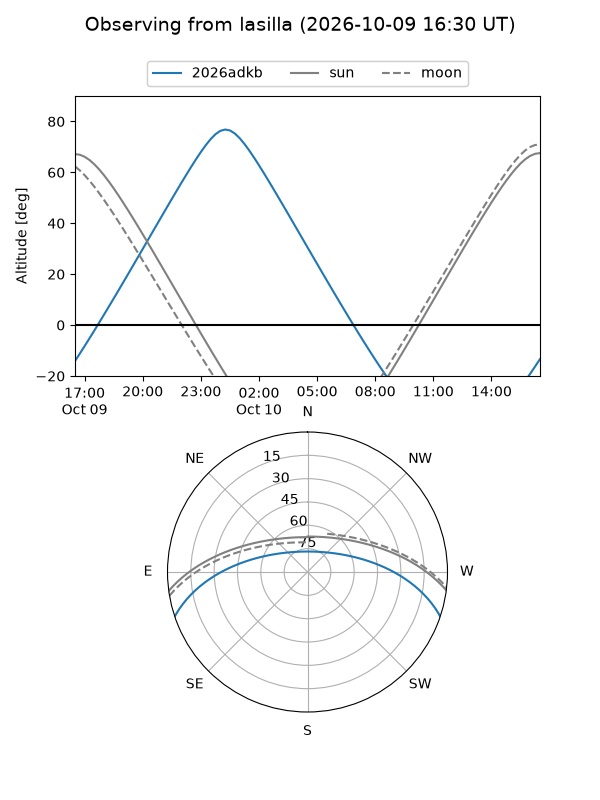
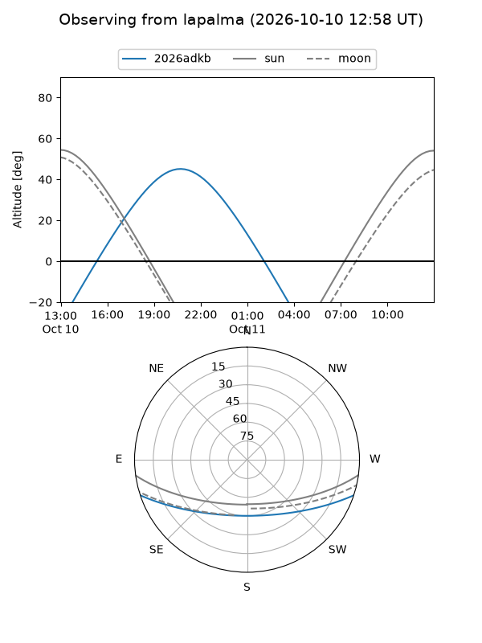
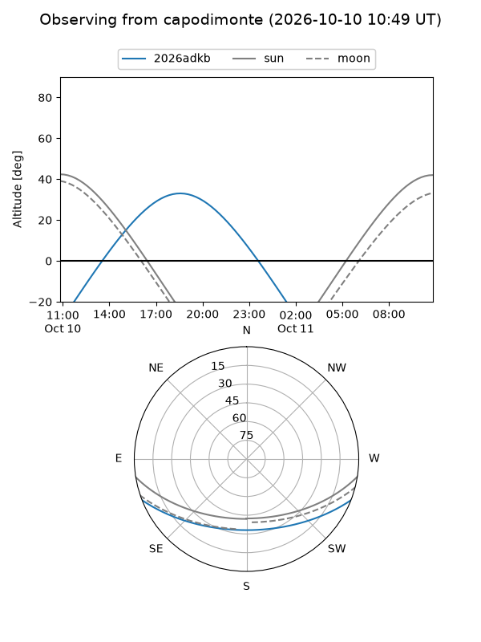
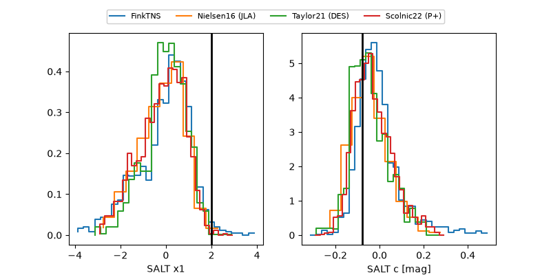

2026adkb
Target 2026adkb at 2026-10-10 13:26
Aliases and brokers:
FINK-ZTF: ztf.fink-portal.org/ZTF26abxxcma
Lasair-ZTF: lasair-ztf.lsst.ac.uk/objects/ZTF26abxxcma
ALeRCE-ZTF: alerce.online/object/ZTF26abxxcma
YSE-PZ: ziggy.ucolick.org/yse/transient_detail/2026adkb
TNS name: wis-tns.org/object/2026adkb
Direct TNS query: direct search
alt names
ZTF26abxxcma (ztf,fink_ztf)
2026adkb (tns,yse)
ATLAS26mda (atlas)
PS26jlj (panstarrs)
Coordinates:
equatorial (ra, dec) = 311.6553,-16.18954
equatorial (HMS+DMS) = 20:46:37.27,-16:11:22.33
galactic (l, b) = (30.4003,-32.60424)
Flags:
peak dt: +2.0
Photometry:
last atlasc=19.30, ztfg=19.29, ztfr=19.48
1 atlasc, 3 ztfg, 3 ztfr detections
Lightcurve

Visibility



Additional plots
